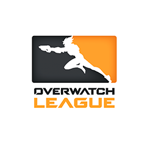

오버워치 리그 (Overwatch League)

오버워치 리그는 20개의 연고 도시 기반의 팀으로 이루어진 국제 e스포츠 리그로, 지구상 최고의 오버워치 선수들이
참가합니다.
280개의 경기로 구성되는 정규 시즌은 2월에 시작되고, 가을의 포스트시즌 플레이오프와 함께 막을 내립니다.
미화 5백만 달러에 달하는 상금 총액과 손에 땀을 쥐게 하는 스토리, 선수들의 보장된 연봉, 최첨단 수준의 완성도를
자랑하는 오버워치 리그는 세계를 대표하는 e스포츠 리그입니다. 프로 스포츠의 지역 연고, 저지 개념의 스킨 등과
글로벌리즘을 갖고 있습니다.
팀 소개
대서양팀

태평양팀

포맷
정규 시즌은 각 70개의 경기로 이루어진 4개의 스테이지로 나뉩니다. 처음의 3개 스테이지를 마친 후에 스테이지 플레이오프가 펼쳐집니다. 포스트시즌 플레이오프는 스테이지 4 후에 진행됩니다. 시즌 기간에는 각 팀의 경기 승수에 따라 순위가 정해지고, 무승부일 경우 전장 득실을 따져 우승팀을 정합니다.
스테이지 플레이오프
3회의 스테이지가 끝난 후에 해당 스테이지에서 경기 승수가 가장 많은 8개 팀이 스테이지 플레이오프 출전권을 얻고, 출전 팀은 시드를 받아 상금과 명예를 걸고 토너먼트를 펼칩니다.
포스트시즌 플레이오프
양 디비전의 우승팀과 경기 기록이 그다음으로 우수한 네 팀(디비전 무관)은 자동으로 플레이오프 출전권을 얻습니다. 이후 7위부터 12위까지의 팀이 플레이인 토너먼트를 통해 추가로 출전권을 얻게 됩니다. 플레이오프에 진출한 8개 팀은 리그 챔피언 자리와 5백만 달러의 총상금 중 일부를 놓고 더블 엘리미네이션 대진표에서 경쟁합니다.